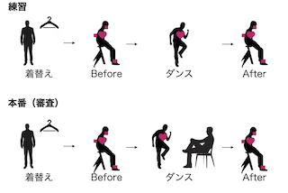
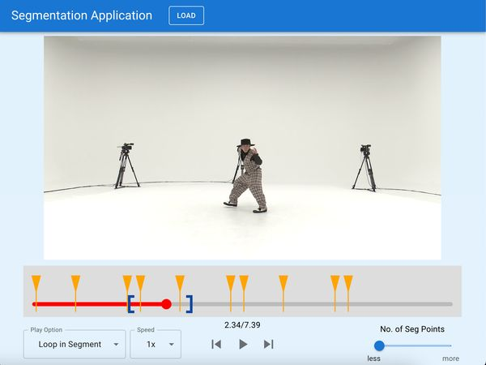
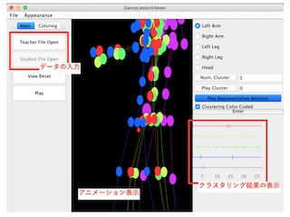

2022/11/28
MoMM2022にてEffects on Separated Learning of
Acquiring Physical Movement Skills Classified by Level of Difficultyの登壇発表をしました。
News
2022/11/18
一般財団法人 最先端表現技術利用推進協会より奨励賞を受賞しました。
2022/10/16
Meetup-2「研究思考とアート+エンタテインメント」に委員会幹事として参加しました。
2022/09/15
KISS FM KOBEのシャカリキに出演しました。
2022/09/03〜09/17
神戸市と(株)神戸ウォーターフロント開発機構が、工事中の神戸ポートタワーで行っているプロジェクションマッピングにおいて、国立大学法人神戸大学（以下、神戸大学）と連携し新企画「Kobe×Dance Week」を開催しました。
土田はイベントの企画・運営を担当しました。
2022/08/01
情報処理学会より 山下記念研究賞を受賞しました。
2022/07/13
大阪府立三国丘高等学校 「三丘セミナー」で「ダンス情報処理が切り拓く表現の世界」について講義しました。
Research

ダンスパフォーマンスにおける練習環境・本番環境
On going...
ENG:
JPN:

ダンスをマスターした自身の映像を先に見ることによるダンス学習支援
土田修平（神戸大学）, Mao Haomin（神戸大学）, 岡本 秀明（ソフトバンク株式会社）, 鈴木
裕真（ソフトバンク株式会社）, 金田 麟太郎（ソフトバンク株式会社）, 堀 隆之（ソフトバンク株式会社）, 寺田 努（神戸大学）, 塚本 昌彦（神戸大学）
本研究では，プロフェッショナルなダンサーのダンスをマスターして踊る自身の映像を見ながらダンス動作を学習する学習支援手法を提案する．理想的な動作を行う自身の映像を見ることで行動の改善を促す「ビデオセルフモデリング」は，運動技能の学習においても有効とされる．しかし，理想的な動作を行なっている自身の映像を作成するには，多くの時間を割く必要があり手間がかかる．そこで，深層学習による映像生成技術を用いて参照動画中のダンサーの動作と同じ動作を行う学習者自身の映像を自動で生成し，その映像を見ることで学習者の学習を促す．
ダンスステップ学習における分離学習の適用
土田修平（神戸大学）, 寺田 努（神戸大学）, 塚本昌彦（神戸大学）
我々の研究グループでは，身体を動かさずに情報提示を受けることに集中するフェーズと動作を実施するフェーズの二つに分割して学習を進める「分離学習」という学習方法を提案している． 本研究では，身体全体を使ったダンスステップの習得のための情報提示システムを構築し，ダンスステップの習得においても分離学習が適用可能か，また動作の習得難易度によって分離学習の有効性に影響を及ぼすかについて評価した．
ダンスレッスンの可能性を拡張する講師ー生徒サポートAIシステムの開発
柴崎加奈子, 土田修平（神戸大学）, 清水大地（東京大学）
COVID-19により、ダンスレッスンもZoom等のオンライン環境により実施されるようになった。一方で、そこでは以下の複数の課題が見受けられることが分かっている。以上の課題を解決するためのダンスレッスンのシステムを構築・提案することにより、複数の生徒に対する細やかな指導、各生徒のペースに合わせた豊かな学習、講師―生徒間のコミュニケーションを取る事も可能となると考えられる。
・生徒間、及び生徒講師間でのコミュニケーションが取りづらい
・一人一人に指導が行き届かず、従来の対面レッスンのような細やかな指導がしづらい

ダンスモーションの反復練習とその上達過程の可視化
川西真美（お茶の水女子大学）, 土田修平（神戸大学）, 伊藤貴之（お茶の水女子大学）
我々は，同一のダンスを反復的に練習した際の動作の差異や変化を可視化することで，ダンスのスキル向上に寄与する可視化システムを開発している．本手法では，同一人物による同一のダンスの練習を複数回計測する．そして各モーションに対して，動作のタイミングを揃える時間補正，ダンサーの位置や身体の向きを揃える空間補正を適用する．講師による模範動作も計測されている場合には，ダンサーと講師の間の体格差を補正する体格補正も適用する．続いて補正後の各モーションを構成する手足などのパーツに対してクラスタリングを適用し，クラスタリング結果を可視化する．ユーザはその可視化結果にもとづいて任意の複数のモーションを選んで，これらをアニメーション表示することで，ダンサーの動作の差異や変化を確認することができる．
ENG:

DanceUnisoner: グループダンスパフォーマンス動画作成インタフェース
土田修平（産業技術総合研究所）, 深山 覚（産業技術総合研究所）, 後藤真孝（産業技術総合研究所）
複数人でのダンスのイメージを振付師1人でも検討・確認・共有できるグループダンスパフォーマンス動画作成インタフェース DanceUnisoner を開発した． DanceUnisoner では，ダンサー1人が踊っているダンス動画をコピー&ペーストの要領で三次元空間に配置していくことで，グループダンスの動画を手軽に作成できる． グループダンスの人数や配置，向き，大きさ，時間ずれを一括で容易に変更できるシンプルなGUIを備える．
ENG:
AIST Dance Video Database:ダンス情報処理研究のためのストリートダンス動画データベース
土田修平（産業技術総合研究所）, 深山 覚（産業技術総合研究所）, 濱崎雅弘（産業技術総合研究所）,
後藤真孝（産業技術総合研究所）
産総研ダンスビデオデータベースは、著作権をクリアした60曲の楽曲と13940本のストリートダンスビデオを含む大規模データベースです。 ダンスモーション分類やダンサー識別などのダンス情報処理の研究を促進させます。

Query-by-Dancing: 身体動作の類似性に基づくダンス楽曲検索システム
土田修平（産業技術総合研究所）, 深山 覚（産業技術総合研究所）, 後藤真孝（産業技術総合研究所）
ダンス動画データベース中を検索するためのクエリとして，ユーザのダンス動作を用いるQuery-by-Dancingを開発した． このシステムは，クエリであるダンスに含まれるポーズ（姿勢）とモーション（動作）を抽出し，それらに類似したポーズとモーションが含まれるダンス動画を検索する． 得られたダンス動画に付随する楽曲を用いることで，自分のダンスに適した楽曲を検索できる．
球体型自走ロボットを用いたダンスパフォーマンス環境の構築
土田修平（神戸大学）, 寺田 努（神戸大学）, 塚本昌彦（神戸大学）
本研究では，パフォーマが自身の動作と移動ロボットの動作の対応を考慮しつつ，インタラクティブにパフォーマンスを作成できる仕組みを構築する．具体的には球体型自走ロボットの動作と，LED の光という要素を加えたパフォーマンスを自由に作成できるシステムを開発した．システムの有効性を評価するために，3 名のパフォーマに，実際にシステムを利用してパフォーマンスの作成およびパフォーマンスの実演を行ってもらった.
ダンスパフォーマンスにおける自走型スクリーンを用いた隊形練習支援
土田修平（神戸大学）, 寺田 努（神戸大学）, 塚本昌彦（神戸大学）
本研究では，隊形練習において一部のダンサーが欠けてもスムーズに練習を行うための自走型スクリーンを用いたダンス練習支援システムを提案する． システムの提案にあたって，1 人で踊る，自走ロボットと踊る，プロジェクタ映像と踊るの3 つの隊形の練習手法のうち，どれが実際にダンサーと2 人で踊る練習手法の感覚に近いかを調査した． その結果から，プロジェクタ映像と踊る手法が最も感覚が近く，自走ロボットと踊る手法が最も移動の再現性が高いことを確認した． これら2 つの手法を組み合わせた隊形練習における一部のダンサーが欠けてもスムーズに練習を行うための自走型スクリーンを用いたダンス練習支援システムを提案した．
Works
Mimebots
Mimebotは、LEDの光を用いて、観客に球体が回転しているように錯視させることができます。
そのため、Mimebotsは現実的な球体の動きを表現できるだけでなく、物理学の法則と矛盾する動き、たとえば上り坂を転がるように見える動きも表現できます。
また、リアルな球体の動きを用いること、周囲の環境を錯視をさせることもできます。 例えば、壁に衝突したように見せることで、目に見えない壁の存在を表現できます。
PerMo
新体操、ジャグリング、マジック、フリースタイルフッ トボールやパントマイムといった古典的な身体パフォーマンスに加え、MOVEment、Moon
Beams、Metamorphose(s)、Ballons de baudruche、La danse des
ballonsといった作品で見られるように、身体表現と球体のオブジェクトを組み合わせたパフォーマンスが多くみられる。
これらパフォーマンスにおいて移動ロボットを組み合わせたものを想定し、 新たな機構を搭載した球体型移動ロボットPerMoを作成した。